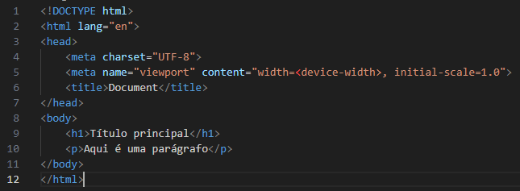

Vamos falar sobre HTML?
Índice
O que é HTML?
HTML é uma linguagem de marcação de hipertexto (HyperText Markup
Language), criada pelo britânico Tim Berners-Lee. HTML está presente
na maior parte das páginas web, é o ponto de partida para criar uma página pois desta
forma fazemos sua estrutura. Hipertexto refere-se aos links que conectam páginas
entre si e a marcação é para anotar texto, imagem e outros conteúdos para
exibição ma Web. A marcação inclui elementos especiais conhecidos como
tags: <p>, <h1>, <div>, e muitas outras. Todo arquivo HTML
e salvo com a extensão .html e pode ser criado até em um bloco de notas simples, só
salvar com essa extensão.
As tags são formadas pelo nome do elemento entre "<" e ">", a maioria das tags
tem sua abertura e seu fechamento acrescentando "/" antes do seu nome como: <p>
está tag é um parágrafo</p>.
-
<html><html> está tag é onde toda nossa estrutura da página
fica, todas as tags estão dentro dessa.
-
<head></head> está tag é conhecida como a cabeça do nosso
código html, dentro dela temos outras tags para descrição da página como
autor, titulo, estilos css e muito mais.
-
<body></body> está tag é o corpo da nossa página, todo o
conteúdo em si vai estar dentro dessa tag.
-
<h1>,<h2>,<h3>,<h4>,<h5>,<h6> são tags
para títulos de forma hierárquica sendo o <h1> título principal e assim
por diante.
-
<p></p> parágrafo.
-
<i></i> deixa o texto em ítalico.
-
<em></em> ítalico/ênfase.
-
<b></b> deixa o texto em negrito.
-
<strong></strong>negrito/importância.
-
<u></u> deixa o texto sublinhado.
-
<br> insere quebra de linha.
-
<hr> insere uma linha horizontal.
-
<mark></mark> coloca uma marcação no texto.
-
<blockquote></bluckquote> insere uma citação serve para quando
utilizar algo de outras fontes.
-
<abbr></abbr> abreviação.
-
<a></a> insere links.
-
<img> insere imagens.
-
<ul></ul> cria uma lista não ordenada.
-
<ol></ol> cria uma lista ordenada.
-
<li></li> cria o item da lista.
-
<title></title> titulo da página.
Vamos ver agora um exemplo

Agora explicarei algumas coisas que não foram ditas antes:
-
<!DOCTYPE html> nesta primeira linha apesar de ser bem parecido com uma tag
não é considerado uma, e sim uma declaração para informar aos navegadores qual a versão
do HTML utilizada, neste caso e o HTML5.
-
Na segunda linha temos o incio do HTML de fato porem temos um atributo
na tag lang="en" que é usado para definir a linguagem que foi
escrita essa página. Os atributos servem para controlar o comportamento de um
elemento.
-
Terceira linha temos o <head>(cabeça) com algumas tags. <meta charset="UTF-8"> esta tag possui
vários atributos neste caso charset="UTF-8" define o conjunto de caracteres que será exibido na Web.
<meta name="viewport" content="width=device-width, initial-scale=1.0"> nesta linha da tag meta temos mais de uma atributo
mais no geral esta linha tem a ver com a responsividade de um site, que seria ser adaptável a qualquer tela. Por fim
temos o título da página <title>Primeiro Código Html</title> que aparecerá na parte de cima na aba do
navegador.
Referências
Voltar ao começo